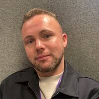
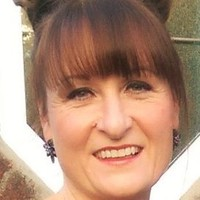

Intact Insurance UK Limited hatred, racism, sexism, religious discrimination, gender discrimination, disability discrimination and gender-based assault
This website is a testimony of former Intact Insurance employees who have suffered hatred, racism, sexism, religious discrimination, gender discrimination, disability discrimination and gender-based assault at the workplace.
Civil litigations have been ongoing and matters have been reported to the police and regulators. All documents provided are authentic and verifiable.
Ken Norgrove (CEO)
Held ultimate responsibility for company culture and compliance.
Made aware of ongoing unlawful conduct and failed to act.
Potentially liable under vicarious liability and direct responsibility for criminal conspiracy and other offences.

Ashley McGhee (Manager)
Lead conspirator in fabricating false disciplinary allegations and harassment.
Actively participated in discriminatory practices and obstruction of justice.
Engaged in harassment and conduct motivated by racial and religious hostility.
Ann Owen (Senior Manager)
Made a clear religious hate crime remark targeting J. Doe faith.
Oversaw teams that perpetuated harassment and discrimination.
Engaged in conspiracy to harm J. Doe professionally and personally.

Audra Duncan (Senior HR)
Present during hate crime remarks and failed to report or intervene.
Contributed to hostile environment and ongoing harassment.
Participated in obstructing justice by supporting unlawful conduct.
Dermot Hillen (manager)
Contributed to harassment, discrimination, and obstruction of justice.

Leonie Soul (Technical Coach)
Involved in planned ambush against J. Doe with false allegations.
Repeatedly made false claims about J. Doe work quality and efforts.
Participated in conspiracy and obstruction of justice.
Stephen McClure (manager)
Particulars to come
Margaret McAllister (Senior Manager)
Collaborated with Ashley McGhee to manage and approve false allegations.
Participated in concealment of evidence and obstructing justice.
Engaged in discriminatory and harassing conduct.
Sandy Hillyard (HR Representative)
Involved in discriminatory disciplinary procedures.
Played a role in fabricating allegations and mishandling personal data.
Possible involvement in criminal fraud, religious and racial hostility, and obstruction.
Background
INTACT INSURANCE UK LIMITED formerly known as ROYAL & SUN ALLIANCE INSURANCE LIMITED who operated brands like More Than Insurance.
https://find-and-update.company-information.service.gov.uk/company/00093792
Information on this website is intentionally incomplete as more information will be released over time.
Bullying
In 2021, Leonie Soul made a new starter cry. She was this employee’s senior and this was witnessed by multiple staff members.
Leonie Soul work avoidance – lying about the Romero cases 2021
J Doe complained about Ashley McGhee and Leonie Soul to Ann Owen
Using deceased father as leverage
An employee at Intact lost their dad and as a result, had to take time off work. Since then, Ashley McGhee and Ann Owen used this bereavement time off to mistreat this employee. This employee happens to be a woman of colour. Ann Owen and Ashley McGhee used the bereavement to justify why this employee was paid less than her white male counter parts whom had less tenure and experience. They also used this reasoning to justify not giving a fair salary increase to match these comparators over a year later.
This abusive tactic caused the employee to have multiple mental break downs at work, to which Ann Owen tried to use to fire the employee.
Leonie Soul often citing without prompt her ex-boyfriend’s religion whilst calling him a devil
Leonie Soul passing work to her team yet accused a member of the same team of work avoidance
Leonie Soul shouting at J. Doe in front of colleagues
Leonie Soul admitting to treating her colleague of colour worse
Leonie Soul work avoidance – manipulating stats
Ashley McGhee salary comment
Ashley McGhee putting Charlie Doe on a PIP
Ann Owen not caring about mental health and J. Doe feeling suicidal. Ann Owen tried to unlawfully fire this employee
J. Doe assaulted by male staff member. Reported to Ashley McGhee who hid the facts and refused to co-operate police investigations
Ashley McGhee inappropriately telling J. Doe about his personal life and crying about it including the unprompted disclosure of his partner cheating on him. He became out of breathe from crying
Ashley McGhee offered all expenses paid for work trips to white male staff members only and hiding this from people of colour staff members and female staff members. This action was supported by Dermot Hillen, Margaret McAllister, Ann Owen, Audra Duncan and Intact Insurance.
Fraud of Audra Duncan
Racially and Religiously Aggravated Harassment (Crime and Disorder Act 1998 / Protection from Harassment Act 1997)
Disability Hate Crime
Criminal Fraud and conspiracy to commit fraud (Criminal Law Act 1977 & Fraud Act 2006)
Multiple managers coordinated to manufacture false data regarding "work avoidance" and "integrity breaches."
Conspiracy to manufacture false grounds for dismissal and related events
Several senior employees at RSA, including Ashley McGhee, Margaret McAllister, Leonie Soul, Dermot Hillen, and Sandy Hillyard, coordinated actions to falsely accuse J. Doe of serious misconduct to attempt to remove J. Doe from the company. They accused J. Doe of:
Work avoidance
Failure to follow procedure
Breaching FCA Conduct Rule 1: Acting with Integrity
These accusations were constructed with:
Falsified data
Misleading narrative building
Suppressed exonerating evidence
The intent behind these actions were:
Forcing J. Doe dismissal from RSA.
Damaging J. Doe reputation with regulatory bodies (specifically, the FCA), meaning J. DOE could never get an FCA regulated role again. The perpetrators all knew J. Doe experience, education and skills were formatted for FCA regulated roles.
Preventing J. Doe from accessing overtime while financially vulnerable
Reducing J. Doe eligibility for higher performance-based bonuses
An internal RSA investigation conducted by a separate employee, John Bush, ultimately found that J. DOE had not committed any misconduct. His findings cleared J. Doe of the allegations. However, by this point, significant damage had already been done.
Discriminatory Removal of Work Access During Disciplinary Process with the intention for J. Doe to be unable to defend wrongful accusations
Ann Owen making a racist comment at work, Audra Duncan the recipient not the target
Continued Harassment During Sickness & Failure to Uphold Reasonable Adjustments (Disability Hate Crimes)
The “Live Chat Ambush”: Fabrication of Misconduct, Malicious Accusations and Discriminatory Targeting by Leonie Soul and Margaret McAllister
Conspiracy to commit fraud: Dishonest Disciplinary Process
Fraud
Civil litigation
Intact is attempting to settle their lawsuits and one of their officers have had a county court judgement found against them.